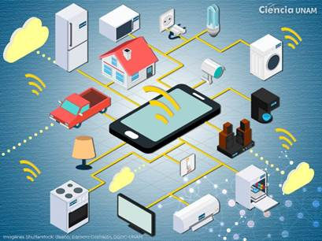

Desde que nació, el internet ha revolucionado la forma en que interactuamos, trabajamos, aprendemos y nos entretenemos. Esta tecnología ha tenido un impacto significativo en la forma en que nos comunicamos y compartimos información, y ha transformado la manera en que los negocios y las empresas operan.
Internet es una red global de ordenadores interconectados que permite a millones de personas de todo el mundo comunicarse y acceder a información en tiempo real. A través de la red, es posible conectarse con personas y contenido en cualquier parte del mundo, lo que ha llevado a la creación de una comunidad global sin precedentes.
El internet ha cambiado la forma en que las personas se relacionan entre sí. Las redes sociales como Facebook, Twitter e Instagram nos permiten conectarnos con amigos y familiares de todo el mundo, y compartir nuestras vidas de manera virtual. Los chats y los mensajes de texto facilitan la comunicación en el trabajo y en la vida diaria, mientras que las videollamadas permiten mantener conversaciones cara a cara, incluso cuando estamos a kilómetros de distancia.
Además, el internet ha transformado la forma en que consumimos información. Antes de la era digital, la información se transmitía principalmente a través de los medios tradicionales como la televisión, la radio, los periódicos y las revistas. Hoy en día, tenemos acceso instantáneo a la información online a través de motores de búsqueda como Google y Yahoo, lo que nos permite acceder a noticias, artículos, videos y mucho más de manera fácil y rápida.
Otra forma en que el internet ha cambiado nuestra forma de vida es a través del comercio electrónico. Ahora, casi cualquier cosa se puede comprar a través de internet, desde productos de consumo hasta servicios. El comercio electrónico ha permitido a las empresas llegar a una audiencia global y reducir los costos de operación y publicidad. Las compras online son cada vez más populares en todo el mundo, y los consumidores pueden acceder a una variedad casi infinita de productos y servicios sin salir de casa.
Aun así, a pesar de los enormes beneficios del internet, hay algunas desventajas que también debemos considerar. Una de las principales preocupaciones son los problemas de seguridad y privacidad que existen en la red. La cantidad de información personal que se comparte en línea ha llevado a un aumento en los riesgos de robo de identidad, fraude y piratería informática. Además, la cantidad de información personal que se recopila y almacena por las empresas de tecnología plantea serias preocupaciones sobre la protección de la privacidad del usuario.
Otra preocupación importante es el impacto que el internet está teniendo en la salud mental de las personas. Investigaciones recientes han vinculado el uso excesivo de la tecnología con problemas como la depresión, la ansiedad y la baja autoestima. La constante interrupción de la tecnología en nuestras vidas puede ser abrumadora y conducir a niveles elevados de estrés, lo que afecta nuestra calidad de vida.
También debemos considerar los efectos del internet en la educación y el aprendizaje. Aunque el internet ha abierto un mundo de información educativa, la facilidad de acceso a esta información a menudo lleva a una falta de profundidad en el aprendizaje y una disminución en la capacidad de concentración. La cantidad de información disponible en línea puede ser abrumadora y dificulta la identificación de fuentes confiables y auténticas.
Sin embargo, a pesar de estos desafíos, el internet sigue siendo una herramienta increíblemente poderosa que ha transformado la forma en que vivimos nuestras vidas. Ahora podemos conectarnos con personas y lugares que de otra manera serían inaccesibles, y acceder a una cantidad casi infinita de información con solo hacer clic en un botón.
el internet ha revolucionado la forma en que las personas interactúan, trabajan, aprenden y se entretienen. Aunque hay riesgos y preocupaciones asociados con el acceso a la información en línea, el internet sigue siendo una herramienta increíblemente poderosa y vital en la vida moderna. Como sociedad, debemos seguir trabajando para garantizar que las desventajas se minimicen, mientras que aprovechando al máximo los enormes beneficios que el internet tiene para ofrecer.